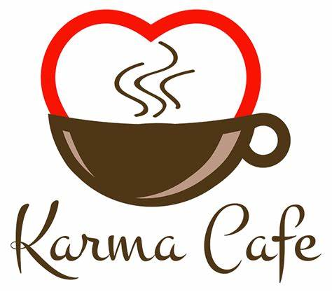

Karma cafe and Resturants
The Top Five Wellness Trends of 2020
Each year leading brands release their predictions for the top travel and wellness trends ahead. We ask Karma’s Spa & Wellness Curator, Judy Chapman, to highlight five of her favorite biggest health and wellness trends for 2020.
Pro Health Aging
Forget anti-aging, it’s all about aging well or ‘getting younger as we grow older’. According to Mindbodygreen.com, we need to think more about our health span, not just life span. Says Judy: ‘We are living in the age where we are living longer than ever. At 50, we are now potentially only half way through our lives – that’s a game-changer.’ We now know that our genes are only part of the story and it’s said that 70% of modern diseases are preventable through our lifestyle, nutrition and exercise. With meditation apps and on-line fitness classes, there’s never been an easier time to age gracefully without losing muscle tone, memory and cognitive function.
Natural Movement
‘This is by far one of my favorite wellness trends of the year,’ says Judy. Identified by the Global Wellness Institute, the natural movement ‘fitness’ trend is inspired by the research that the longest living people on earth residing in ‘Blue Zones’ don’t necessary keep fit by going to the gym but are moving naturally throughout their day – essentially incorporating more activity into their daily habits. Says Judy: ‘This is why I love our 350 steps at Karma Kandara – the stairway shaded by greenery leads you all the way down to the turquoise waters at Karma Beach – it’s a must-do to keep fit the heart rate up during your relaxation vacation.’
Lymphatic Health
This wellness trend identified by Wellandgood.com is thought to be the next wave in wellness and with good reason. Explains Judy: ‘Our lymphatic system is the filtering system of our bodies and we need to keep things moving to avoid stagnation. ‘Karma Spa were one of the first spas in Bali to launch an Infrared Sauna that we know is such an effective way to move toxins out through the skin. When combined with manual massage and movement, the results are terrific.’ Look out for more lymphatic treatments as well as lymph fitness classes.
Conscious Beauty
Water is a limited resource and waterless beauty brands are the next frontier of conscious beauty brands. At Karma Spa on Rottnest Island, we partnered with Perth-based skincare brand, MOKOSH for their waterless formulations. Another reason, we partnered with MOKOSH was for their undeniable commitment to social and community. Says Judy: ‘Last year, they began raising funds to purchase trees to plant in the Yarra Yarra Biodiversity Corridor, to provide habitat for endangered species, restore degraded farm soil, recharge water systems and pull carbon out of the atmosphere – now that’s true beauty!’
Is Sound Healing The Medicine of The Future?
Music is a universal language that creates connections between people and cultures. Music is also the DNA of Karma and integral to many of our year-round resort events, ceremonies and celebrations. With more and more research into the health benefits of sound on our brain and body, we’re going to see a lot more sound in spas in the near future. Sound has long been used in healing as well and floods our brains with dopamine – and in ancient Greek times, Hippocrates, the ‘father of medicine’, reportedly played music to his patients. Says Judy: ‘Here in Bali, we’re currently developing a unique Sound Bowl Healing Massage with group Sound Gong Baths by the sea being launched at Karma Kandara next month.’ Says Judy: ‘In my experience, sound healing can feel just as calming and restorative as a massage – it’s transforming.’SS .